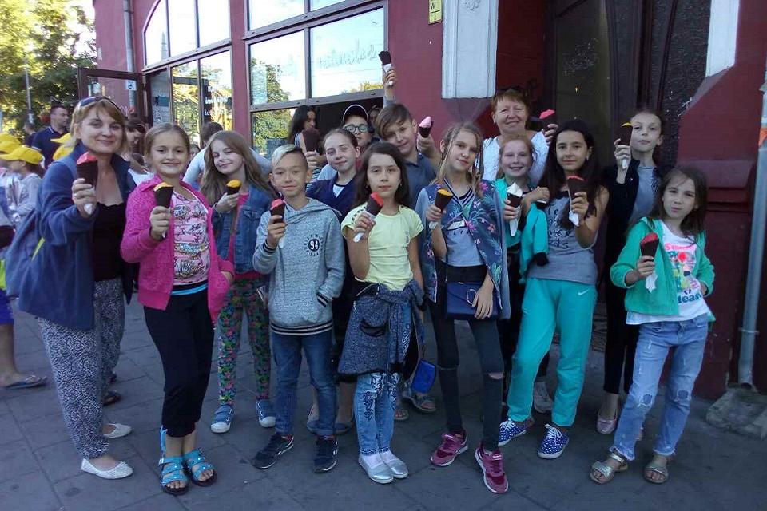

Letnie emocję 2018
Lato to pora ciekawych wydarzeń i wyjazdów...
„Młode listki” i Wrocław
Tym razem lato dzieciom i młodzieży z Domu Polskiego w Barze pryniosło nowe emocje, było niesamowicie obfite w wyjazdy do Polski i bogate we wrażenia.
Pierwszym był Wrocław,który radośnie przywitał najmłodszych,a był to chór „Młode Listki”.Uczestnicy chóru po raz pierwszy mieli zaszczyt przedstawić swoją twórczość widzom w Kudowie Zdroju i Wrocławiu. Młodzi artyści nie tylko występowali na scenie, ale również brali udział w niedzielnej Mszy Św.,chwaląc swoim śpiewem Pana Boga.
Najweselszymi i najbardziej oczekiwanymi były wyjazdy do wrocławskiego ZOO i na basen.Nie zabrakło śmiechu i radosnej zabawy w wodzie. Zwiedzaniu ZOO dopisała świetna, słoneczna pogoda.Dzieci mogły podchodzić do zagrody ze zwierzętami,poznawać w ten sposób nowy dla siebie świat flory i funy. No i oczewiście nawiększą radość sprawiły lody we włoskiej lodziarni na rynku wrocławskim.
Tak wiele ciepłych słów wdzięczności chciałoby się powiedzieć naszym Przyjaciołom z Wrocławia: ukochanej Pani Bożenie Słupskiej, która od lat jest inicjatorką naszych wyjazdów i główną organizatorką Dni Kultury Kresowej we Wrocławiu,Państwu Dąbrowskim - Jolancie i Włodzimierzowi;Paniom Jolancie i Alicji Pac. Najpiękniejsze słowa nie są w stanie przekazać naszego uczucia wdzięczności. Wdzięczność jest kluczem do pamięci, a pamięć jest ponad słowami.
Letnie emocję 2018
Niezapomniane wrażenia z wypoczynku w Polsce pozostały w pamięci grupy dzieci z miasta Bar, która prez 12 dni przebywała w Ośrodku Harcerskim w Wapiennicy. Dziesięć dni aktywnego wypoczynku spowodowało, że młodzież wracała na Ukrainę wypoczęta, pełna wrażeń, bogatsza w nowe doświadczenia i przyjażnie.
Nasze wakacje w tym roku były wspaniałe. Mieliśmy okazję z grupą dzieci z Domu Polskiego w Barze wyjechać na wypoczynek do Polski. Czas spędzaliśmy nad Zatokę Pucką. Pogoda nam dopisała. Odwiedzaliśmy pobliską plażę, spacerowaliśmy po miasteczku, a także mieliśmy zaplanowane wycieczki do Łeby i na Hel. Prawdziwą frajdą były pokazy-przedstawienia morskich zwierząt: uchatek i fok w Sea Parku.
Podczas deszczu nie było nam wcale nudno, ponieważ oprócz grupy z Baru były też dzieci z Polski(Kwidzyn)i Białorusi(Grodno). Mieliśmy dużo zajęć, różnych gier,opowiadaliśmy ciekawe historie. Byli z nami opiekunowie, którzy zawsze przygotowywali dla nas interesujący program. Panie Wiesława Szkutnik i Grażyna Piwak-Więcek nauczyły nas harcerskich zabaw. Niestety, dwa tygodnie minęły szybko i musieliśmy wracać do domu. Bardzo mile wspominamy pobyt w Pucku na Kaszubach. To były jedne z najlepszych wakacji, jakie mieliśmy okazję przeżyć.
Festiwale w Polsce
Zespół taneczny „Aksamitki”,który działa przy Domu Polskim w Barze w czasie letnich wyjazdów w tym roku wziął udział w dwóch prestiżowych festiwalach: Międzynarodowym Harcerskim Festiwalu Kultury Młodzieży Szkolnej w Kielcach (gdzie przebywaliśmy przez 2 tygodnie). Pozostawiliśmy po sobie w Kielcach bardzo dobre wrażenie, dowodem czego była decyzja juri festiwalu, aby „Aksamitki” uroczystym polonezem rozpoczęły Koncert Galowy Laureatów w amfiteatrze Kadzielnia. Na Festiwalu w Kielcach zdobyliśmy Srebrną Jodłę w kategorii zespołów prezentujących folklor Polski.
Tym razem śpiew chóru „Młode liście” z Baru zabrzmial w Kielcach na 45 Międzynarodowym Festiwalu Kultury Młodzieży Szkolnej „Wiatraczek”, który odbył się w dniach 09-22lipca. Uroczysty Koncert Galowy poprzedzony był wręczeniem nagród dla wszystkich laureatów.Uczestnicy Festiwalu zostali ocenieni podczas przeglądów konkursowych przez jury.Jesteśmy bardzo dumni,że nagroda za II miejsce „Srebrna Jodła” przyjechała razem z nami do Domu Polskiego. Patrząc na nią wspominamy te niesamowite, jasne, wesołe, muzyczne, atrakcyjne dni życia Festiwalu. Uczestnictwo w festiwalu to również wzięcia udziału w warsztatach oraz poznania przyjaciół z całego świata bez granic, którzy myślą tak jak ty,bo łączy nas zapał i pasja do ulubionej sprawy.
Drugi festiwal - nie mniej prestiżowy—to Festiwal Kultury Kresowej w Mrągowie, na którym Dom Polski w Barze był reprezentowany przez 2 zespoły: taneczny„Aksamitki” i wokalny „Rezonans”. Każdy z zespołów przygotował osobny repertuar, natomiast na Koncercie Galowym zespoły przedstawiły wspólną kompozycję wokalno- choreograficzną „Ostatni Mazur”.
„Cantica anima” w Koszalinie
Lato to pora ciekawych wydarzeń i wyjazdów... Właśnie takim wydażeniem w życiu chóru „Cantica Anima”, który działa przy Polskim Domu w Barze stał się wyjazd na XVI Światowy Festiwal Chórów Polonijnych do Koszalina. Koszalin po raz kolejny został stolicą pieśni chóralnej,gdzie swój program przedstawiły chóry zPolski, Ukrainy , Białorusi i Czech. Udział w Festiwalu nie został ograniczony wyłącznie do prób i występów. Przede wszystkim towarzyszyła nam przyjazna twórcza atmosfera. Mieliśmy też okazję poznać wiele ciekawych osób. Najważnijsze jednak to polska pieśń jako symbol łączności wszystkich uczestników.